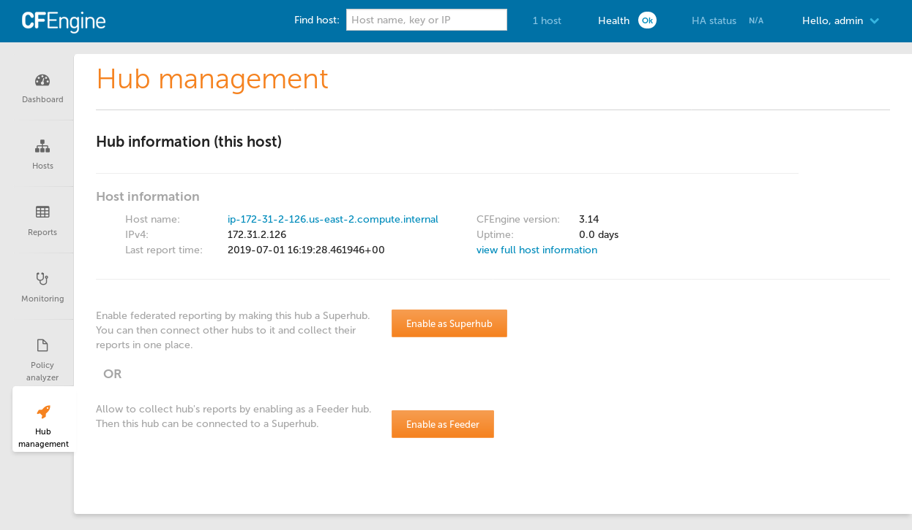
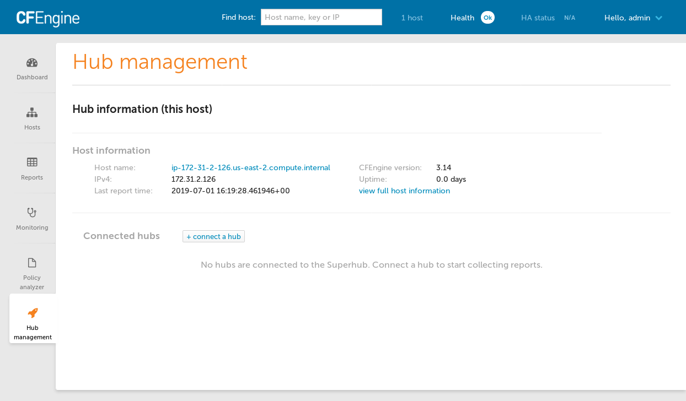
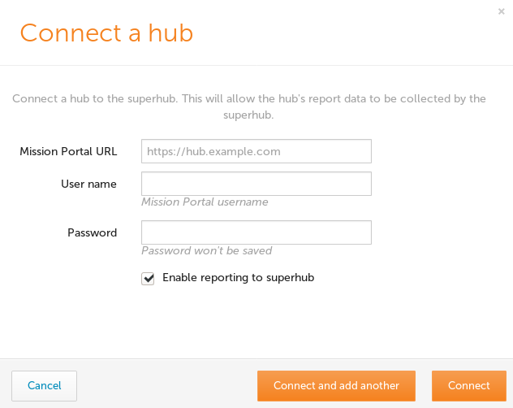
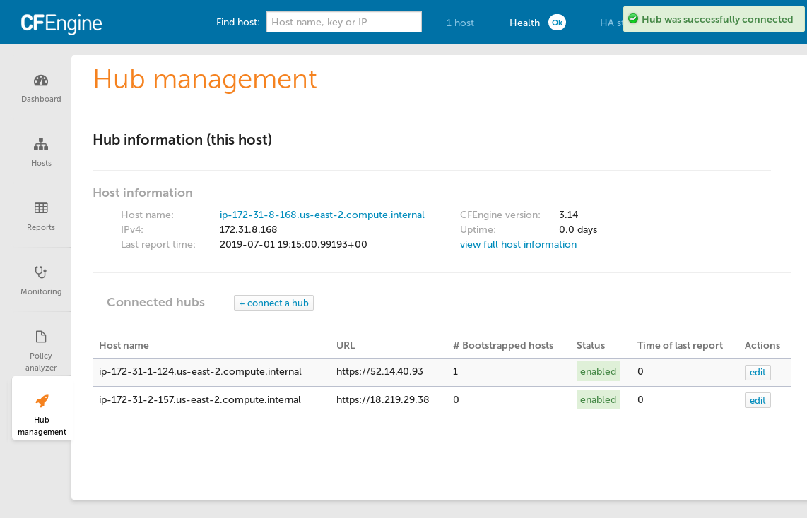

Federated Reporting
Overview
Federated Reporting enables the collection of data from multiple Hubs to provide a view in Mission Portal which can scale up beyond the capabilities of a Hub which manages hosts. CFEngine supports a large number of hosts per hub, around 5,000 hosts per hub depending on many factors. With Federated Reporting it is possible to scale up to 100,000 hosts or more for the purposes of analysis and reporting.
Hubs which hosts report to are called Feeder Hubs.
The hub which collects information from Feeder Hubs is called the Superhub.
If all hubs are version 3.14.0 or higher then Mission Portal can be used to configure and connect the Superhub and Feeder hubs. For Feeder hubs with an earlier version than 3.14.0 some manual steps must be taken. Links to these are provided at each stage of installation and setup that follows.
- Requirements
- Installation
- Setup
- Operation
- Duplicate Host Management
- Troubleshooting
- API Setup
- Disable Feeder
- Uninstall
- Superhub Upgrade
Requirements
Topology Requirements
At this time it is not possible to bootstrap agents to the Superhub. The Superhub itself will be present but the behavior of other agents bootstrapped to the Superhub is untested and unsupported.
Software Requirements
If your hub will have SELinux enabled, the semanage command must be installed.
This allows Federated Reporting policy to manage the trust between the superhub and
feeder hubs.
Add the cfengine_mp_fr_dependencies_auto_install to your augments file to allow
federation policy to ensure that semanage is installed.
{
"classes": {
"cfengine_mp_fr_dependencies_auto_install" : ["any"]
}
}
See cfengine_enterprise_federation:semanage_installed in cfe_internal/enterprise/federation/federation.cf for details on which packages are used for various distributions.
Hardware Requirements
The Superhub aggregates all the data from all the Feeders connected to it which is a periodically running resource intensive task. The key factors contributing to HW requirements for the Superhub are:
The refresh interval at which data is pulled from the Feeders and imported on the Superhub. The default is 20 minutes and it can be changed in the policy.
The amount of data gathered on the Feeders from the reports sent by the hosts bootstrapped to them.
The current implementation of Federated Reporting is not aggregating monitoring data on the Superhub which saves a lot of network traffic, processing power and disk space on the Superhub.
In order to utilize modern configurations, the operations on the Superhub run multiple tasks in parallel, one task per connected Feeder, and so with the increasing number of connected Feeders the number of available logical CPUs and I/O speed play an important role. As with any other batch processing the general rule is that each batch should finish processing before processing of the next batch starts. With the default settings that means that one round of pulling data from the Feeders and importing them into the local database on the Superhub should take less than 20 minutes. The policy will prevent two or more of such rounds from overlapping if one round takes more than 20 minutes, but such setup would degrade the freshness of the data available on the Superhub.
The recommended HW configuration for a Superhub with the default configuration and 5000 hosts per connected Feeder is:
16 GiB of RAM or more,
1 logical CPU per connected Feeder or more,
5 MiB of disk space per host or more,
1000 IOPS storage or faster,
100 Mib/s network bandwidth per connected Feeder,
135 KiB of network data transfer per host per one pull of the data from Feeders.
The Federated Reporting process is logging information to the system log and so timestamps from the log messages can be used to determine how long each round of the pull-import process has taken. If it is close to the configured refresh interval, the interval needs to be made longer or the hardware configuration of the Superhub needs to be enhanced.
The minimum HW requirements for the Superhub are very dependent on the two key factors mentioned above. It is thus highly recommended to connect the Feeders to the Superhub one or two at a time and check the intervals in the logs before connecting more Feeders.
Installation
The General Installation instructions should be used to install CFEngine Hub on a Superhub as well as Feeder hubs.
Setup
Enable Hub management app

On the Superhub and all Feeders enable the Hub management
app by Opening Settings then
selecting Manage Apps and finally
by clicking the On radio button for Hub management in the Status column.
Note: for pre 3.14 feeders this step is not performed.
Enable Federated Reporting

The Hub management app should now appear in the bottom left corner of mission portal.
Click on the Enable Superhub or Enable Feeder button as appropriate. This will cause some configuration to be written in the filesystem and on next agent run policy will make the needed changes. You can speed up this process by running the agent manually.
Note: for pre 3.14 feeders, you must Enable feeder without API.
Connect Feeder Hubs

Refresh the Hub management on each hub to see that Federated Reporting is enabled.
After all hubs have Federated Reporting enabled visit Hub management on the Superhub to connect the Feeder hubs.
On the Superhub, click on the Connect hub button to show the Connect a hub dialog.

Fill out the form with the base URL of your feeder hub Mission Portal and enter credentials for a user with administrative credentials. These credentials will only be used to authenticate to the feeder hub and will not be saved otherwise.
The Hub management view will show all connected hubs, the number of bootstrapped hosts and allow you to edit the settings.

Operation
Now that everything is configured the Feeder hubs will generate a database dump every 20 minutes and the Superhub will pull any available dumps from each Feeder every 20 minutes as well.
You can test import immediately by running the agent on the feeders and then the superhub.
Duplicate Host Management
There are situations where feeder hubs may have hosts with duplicate hostkeys:
- hosts are able to "float", re-bootstrap or failover to several different feeder hubs
- hosts may be cloned and not have their hostkey refreshed by running
cf-keyand refreshing$(sys.workdir)/ppkeys/localhost.pub.
In the first case you will likely want to remove entries for hosts which are not the latest since the latest data will be most accurate.
There are two options available for handling these situations depending on your environment: Distributed Cleanup or Handle Duplicate Hostkeys.
Distributed cleanup
This is the most thorough, performant and automated option. This utility is a python script which runs on the superhub, searches for the most recent contact for each host, then communicates with the appropriate feeders to delete stale hosts.
A few pre-requisites must be handled before enabling this utility:
- gather the admin passwords for the superhub and all feeders
- ensure that the attached feeders resolve their hostnames properly (you may need to add entries to your DNS or /etc/hosts)
- ensure python3 and urllib3 module for python3 are installed
On Debian/Ubuntu:
# apt install -qy python3 python3-urllib3
On RedHat/CentOS versions 7 and above:
# yum install -qy python3 python3-urllib3
On RedHat/CentOS 6 you will have to install python3 manually and the install urllib3 with pip3. Python 3 is actually quite easy to install with the standard building python instructions.
After those steps, ensure cfengine_mp_fr_enable_distributed_cleanup is present in augments for your superhub and all feeders.
{
"classes": {
"cfengine_mp_fr_enable_distributed_cleanup": ["any::"]
}
}
(Note that this augment should be in addition to any others that you need such as cfengine_mp_fr_dependencies_auto_install)
Let the policy run a few times on superhub and feeders. This will distribute the needed certificates from feeders to superhub so that the script on the superhub may securely connect to the feeder API endpoints.
When run manually for the first time the utility will create a limited privileges user to view and delete hosts on the feeders. You will need to enter the following information at the prompts when running the utility manually: - admin password for the superhub - email address for the fr_distributed_cleanup limited privileges user - admin password for each feeder
After confirming all feeder certs and public keys are present on the superhub, run the distributed cleanup script manually.
# ls /opt/cfengine/federation/cftransport/distributed_cleanup/
superhub.pub feeder1.cert feeder1.pub feeder2.cert feeder2.pub
# /opt/cfengine/federation/bin/distributed_cleanup.py
Enter admin credentials for superhub https://superhub.domain/api:
Enter email for fr_distributed_cleanup accounts:
Enter admin credentials for feeder1 at https://feeder1.domain/api:
Enter admin credentials for feeder2 at https://feeder2.domain/api:
The passwords are only kept for the duration of the script execution and are not saved.
The policy will now run the distributed cleanup utility every agent run and cleanup any hosts which are stale on feeders leaving only the most recently contacts host for each unique hostkey.
Handle duplicate hostkeys
The other option removes duplicates during each import cycle.
An augment is available to enable moving duplicated host data to a dup schema for analysis. The host data which has the most recent hosts.lastreporttimestamp will be kept in the public schema and all other data will be moved to the dup domain (schema).
This feature is disabled by default. If enabled it is performed on every import cycle.
{
"classes": {
"cfengine_mp_fr_handle_duplicate_hostkeys": ["any::"]
}
}
This class only has an effect on the superhub host.
Troubleshooting
Please refer to /var/cfengine/output, /var/log/postgresql.log and
/opt/cfengine/federation/superhub/import/*.log.gz when problems occur. Sending
these logs to us in bug reports will help significantly as we fine tune the
Federated Reporting feature.
Also see Disable Feeder for information about how to temporarily disable a feeder's participation in Federated Reporting in case that is causing an issue for the Feeder Hub.
API Setup
An API may be used instead of the UI. This could be used to automate the setup of infrastructure related to Federated Reporting and Feeder hubs.
Command line examples follow using curl and cf-remote.
Some environment variables should be set according to your environment so that you can simply copy/paste steps as you go.
$ export CLOUD_USER="ubuntu@" # optional, just to save cf-remote from guessing/trying
$ export SUPERHUB=18.203.231.97
$ export SUPERHUB_BS=172.31.36.33 # _BS is bootstrap IP in case it needs to be different
$ export FEEDER=34.244.118.58
$ export FEEDER_BS=172.31.43.102 # _BS is bootstrap IP
In these examples we use the admin account because the Admin Role which this user has contains the proper Role Based Access Control privileges to access the needed API endpoints.
Stop cf-execd on the superhub and feeder
We don't want periodic agent runs to get in our ways so let's disable cf-execd.
$ cf-remote sudo -H $CLOUD_USER$SUPERHUB,$CLOUD_USER$FEEDER "systemctl stop cf-execd"
On systems not using systemd, cf-execd needs to be stopped in a different way. Also without systemd, any agent run restarts cf-execd so let's move it out of our ways.
$ cf-remote sudo -H $CLOUD_USER$SUPERHUB,$CLOUD_USER$FEEDER "pkill cf-execd"
$ cf-remote sudo -H $CLOUD_USER$SUPERHUB,$CLOUD_USER$FEEDER "mv /var/cfengine/bin/cf-execd /var/cfengine/bin/cf-execd.disabled"
Update masterfiles (hubs older than 3.14.0)
For hubs older than 3.14.0 the masterfiles must be updated to 3.14.0.
Follow instructions at Masterfiles Policy Framework upgrade.
Passwords
Export the password for the user with administrative rights that will make the
API requests. In these examples the admin user is used. Any user with
administrative rights can make these requests. It is also possible to customize
the RBAC settings to make a user who only has rights to the needed api/fr
APIs.
$ export PASSWORD="testingFR"
Enable superhub
$ curl -k -i -s -X POST -u admin:$PASSWORD https://$SUPERHUB/api/fr/setup-hub/superhub
Enable feeder
$ curl -k -i -s -X POST -u admin:$PASSWORD https://$FEEDER/api/fr/setup-hub/feeder
Enable feeder without API
For older hubs:
$ ssh $CLOUD_USER$FEEDER
$ sudo bash
$ cd /opt/cfengine/federation/cfapache
$ # press Ctrl-D to finish writing file
$ cat > federation-config.json
{
"hostname": null,
"role": "feeder",
"target_state": "on",
"remote_hubs": []
}
$
Trigger agent run
$ cf-remote sudo -H $CLOUD_USER$SUPERHUB,$CLOUD_USER$FEEDER "/var/cfengine/bin/cf-agent -KI"
Ensure there are no errors in the agent run.
Note down SSH and hostkey details
$ cf-remote sudo -H $CLOUD_USER$SUPERHUB,$CLOUD_USER$FEEDER "cat /opt/cfengine/federation/cfapache/setup-status.json"
ubuntu@52.215.88.224: 'cat /opt/cfengine/federation/cfapache/setup-status.json' -> '{'
ubuntu@52.215.88.224: ' "configured": true,'
ubuntu@52.215.88.224: ' "role": "superhub",'
ubuntu@52.215.88.224: ' "hostkey": "SHA=5628db8a4c5e6ba4f040ee1cafb3928abd966ebccb38b0045f91af67e91f9a16",'
ubuntu@52.215.88.224: ' "transport_ssh_public_key": "ssh-ed25519 AAAAC3NzaC1lZDI1NTE5AAAAIHqMau6qL+iCzr6o1+k+1IwoI6Wj++dzEV/w5VGMKy9w root@ip-172-31-22-191",'
ubuntu@52.215.88.224: ' "transport_ssh_server_fingerprint": "|1|d7iPkk7pb7tyZ3Y8lpQv6PIGU54=|VutDe9dq5S9nxgFher0LAapKSas= ecdsa-sha2-nistp256 AAAAE2VjZHNhLXNoYTItbmlzdHAyNTYAAAAIbmlzdHAyNTYAAABBBIW7FD4nfpJThtjtPj5okXsiCEenZOKDZh2akX2pBFlMpwOExVqvZV/all/fSlbVzlZbuHNA99SQ7m9Scsn2o/c="'
ubuntu@52.215.88.224: '}'
ubuntu@34.241.127.1: 'cat /opt/cfengine/federation/cfapache/setup-status.json' -> '{'
ubuntu@34.241.127.1: ' "configured": true,'
ubuntu@34.241.127.1: ' "role": "feeder",'
ubuntu@34.241.127.1: ' "hostkey": "SHA=8451d14a876bf480da2cf30b3293954722792f721b69541f919bb263326fbc45",'
ubuntu@34.241.127.1: ' "transport_ssh_public_key": "ssh-ed25519 AAAAC3NzaC1lZDI1NTE5AAAAIKnYDCbGfSIX/SOj+ZCeca1fX9HF1BdTjUHDyWPFG9Yh root@ip-172-31-27-84",'
ubuntu@34.241.127.1: ' "transport_ssh_server_fingerprint": "|1|UDqYbxUuV0BxrnpVMCZIjc7AIeg=|+TMJ8Cj3o4u8xy3mRSxfoTOdC7Q= ecdsa-sha2-nistp256 AAAAE2VjZHNhLXNoYTItbmlzdHAyNTYAAAAIbmlzdHAyNTYAAABBBHqMOtNqVfryEpLK5rhib62hxSTe4DvTGEBy/Bhmb3tqlhhlRgsR1g0tDtNDkJZ12mnuAMntb8WV0j7SGm9+RYo="'
ubuntu@34.241.127.1: '}'
$ export SUPERHUB_HOSTKEY="SHA=5628db8a4c5e6ba4f040ee1cafb3928abd966ebccb38b0045f91af67e91f9a16"
$ export SUPERHUB_PUB="ssh-ed25519 AAAAC3NzaC1lZDI1NTE5AAAAIHqMau6qL+iCzr6o1+k+1IwoI6Wj++dzEV/w5VGMKy9w root@ip-172-31-22-191"
$ export SUPERHUB_FP="|1|d7iPkk7pb7tyZ3Y8lpQv6PIGU54=|VutDe9dq5S9nxgFher0LAapKSas= ecdsa-sha2-nistp256 AAAAE2VjZHNhLXNoYTItbmlzdHAyNTYAAAAIbmlzdHAyNTYAAABBBIW7FD4nfpJThtjtPj5okXsiCEenZOKDZh2akX2pBFlMpwOExVqvZV/all/fSlbVzlZbuHNA99SQ7m9Scsn2o/c="
$ export FEEDER_HOSTKEY="SHA=8451d14a876bf480da2cf30b3293954722792f721b69541f919bb263326fbc45"
$ export FEEDER_PUB="ssh-ed25519 AAAAC3NzaC1lZDI1NTE5AAAAIKnYDCbGfSIX/SOj+ZCeca1fX9HF1BdTjUHDyWPFG9Yh root@ip-172-31-27-84"
$ export FEEDER_FP="|1|UDqYbxUuV0BxrnpVMCZIjc7AIeg=|+TMJ8Cj3o4u8xy3mRSxfoTOdC7Q= ecdsa-sha2-nistp256 AAAAE2VjZHNhLXNoYTItbmlzdHAyNTYAAAAIbmlzdHAyNTYAAABBBHqMOtNqVfryEpLK5rhib62hxSTe4DvTGEBy/Bhmb3tqlhhlRgsR1g0tDtNDkJZ12mnuAMntb8WV0j7SGm9+RYo="
Adding superhub to feeder
Construct a JSON for POST API
$ printf '{
"ui_name": "superhub",
"role": "superhub",
"hostkey": "%s",
"enabled": "true",
"target_state": "on",
"transport":
{
"mode": "pull_over_rsync",
"ssh_user": "cftransport",
"ssh_host": "%s",
"ssh_pubkey": "%s",
"ssh_fingerprint": "%s"
}
}
' "$SUPERHUB_HOSTKEY" "$SUPERHUB" "$SUPERHUB_PUB" "$SUPERHUB_FP" > superhub.json
$ cat superhub.json
{
"ui_name": "superhub",
"role": "superhub",
"hostkey": "SHA=5628db8a4c5e6ba4f040ee1cafb3928abd966ebccb38b0045f91af67e91f9a16",
"enabled": "true",
"target_state": "on",
"transport":
{
"mode": "pull_over_rsync",
"ssh_user": "cftransport",
"ssh_host": "52.215.88.224",
"ssh_pubkey": "ssh-ed25519 AAAAC3NzaC1lZDI1NTE5AAAAIHqMau6qL+iCzr6o1+k+1IwoI6Wj++dzEV/w5VGMKy9w root@ip-172-31-22-191",
"ssh_fingerprint": "|1|d7iPkk7pb7tyZ3Y8lpQv6PIGU54=|VutDe9dq5S9nxgFher0LAapKSas= ecdsa-sha2-nistp256 AAAAE2VjZHNhLXNoYTItbmlzdHAyNTYAAAAIbmlzdHAyNTYAAABBBIW7FD4nfpJThtjtPj5okXsiCEenZOKDZh2akX2pBFlMpwOExVqvZV/all/fSlbVzlZbuHNA99SQ7m9Scsn2o/c="
}
}
Look at the cat output, ensure ssh_host, ssh_pubkey, and ssh_fingerprint
are correct.
Use POST API to add superhub to feeder
$ curl -k -i -s -X POST -u admin:$PASSWORD https://$FEEDER/api/fr/remote-hub -d @superhub.json --header "Content-Type: application/json"
$ curl -k -i -s -X POST -u admin:$PASSWORD https://$FEEDER/api/fr/federation-config
(The second API call is needed to save the updated config to file,
federation-config.json).
Note: for pre 3.14 feeders, you must Add superhub to feeder without API
Add superhub to feeder without API
To configure things without the API, just modify the
/opt/cfengine/federation/cfapache/federation-config.json file on the
feeder and add the superhub as a remote hub by adding this section:
$ printf '
"remote_hubs": {
"id-2": {
"id": 2,
"hostkey": "%s",
"ui_name": "superhub",
"role": "superhub",
"target_state": "on",
"transport": {
"mode": "pull_over_rsync",
"ssh_user": "cftransport",
"ssh_host": "%s",
"ssh_pubkey": "%s",
"ssh_fingerprint": "%s"
}
}
}
' "$SUPERHUB_HOSTKEY" "$SUPERHUB" "$SUPERHUB_PUB" "$SUPERHUB_FP"
(This isn't the entire file, just modify the remote_hubs section).
Adding feeder to superhub
Construct a JSON for POST API
$ printf '{
"ui_name": "feeder",
"role": "feeder",
"hostkey": "%s",
"api_url": "https://%s",
"target_state": "on",
"transport":
{
"mode": "pull_over_rsync",
"ssh_user": "cftransport",
"ssh_host": "%s",
"ssh_pubkey": "%s",
"ssh_fingerprint": "%s"
}
}
' "$FEEDER_HOSTKEY" "$FEEDER" "$FEEDER" "$FEEDER_PUB" "$FEEDER_FP" > feeder.json
$ cat feeder.json
{
"ui_name": "feeder",
"role": "feeder",
"hostkey": "SHA=8451d14a876bf480da2cf30b3293954722792f721b69541f919bb263326fbc45",
"api_url": "https://34.241.127.1",
"target_state": "on",
"transport":
{
"mode": "pull_over_rsync",
"ssh_user": "cftransport",
"ssh_host": "34.241.127.1",
"ssh_pubkey": "ssh-ed25519 AAAAC3NzaC1lZDI1NTE5AAAAIKnYDCbGfSIX/SOj+ZCeca1fX9HF1BdTjUHDyWPFG9Yh root@ip-172-31-27-84",
"ssh_fingerprint": "|1|UDqYbxUuV0BxrnpVMCZIjc7AIeg=|+TMJ8Cj3o4u8xy3mRSxfoTOdC7Q= ecdsa-sha2-nistp256 AAAAE2VjZHNhLXNoYTItbmlzdHAyNTYAAAAIbmlzdHAyNTYAAABBBHqMOtNqVfryEpLK5rhib62hxSTe4DvTGEBy/Bhmb3tqlhhlRgsR1g0tDtNDkJZ12mnuAMntb8WV0j7SGm9+RYo="
}
}
Look at the cat output, ensure ssh_host, ssh_pubkey, and ssh_fingerprint
are correct.
Use POST API to add feeder to superhub
$ curl -k -i -s -X POST -u admin:$PASSWORD https://$SUPERHUB/api/fr/remote-hub -d @feeder.json --header "Content-Type: application/json"
$ curl -k -i -s -X POST -u admin:$PASSWORD https://$SUPERHUB/api/fr/federation-config
(The second API call is needed to save the updated config to file,
federation-config.json).
Trigger agent runs
The agent run on the feeder will configure ssh and generate a dump. The agent run on the superhub will pull the data and import it. Check that each step works without errors:
$ cf-remote sudo -H $CLOUD_USER$FEEDER,$CLOUD_USER$SUPERHUB "/var/cfengine/bin/cf-agent -KI"
Do a manual collection of superhub data
At this point, the superhubs data has been deleted (replaced by feeder data). We can get the superhub to appear in MP by triggering a manual collection:
$ cf-remote sudo -H $SUPERHUB "/var/cfengine/bin/cf-hub -I -H $SUPERHUB_BS --query rebase"
$ cf-remote sudo -H $SUPERHUB "/var/cfengine/bin/cf-hub -I -H $SUPERHUB_BS --query delta"
Start cf-execd on the superhub and feeder
Let's switch back to ordinary mode of periodic agent runs.
$ cf-remote sudo -H $CLOUD_USER$SUPERHUB,$CLOUD_USER$FEEDER "systemctl start cf-execd"
On systems running systemd, we need to rename the binary back and start it manually.
$ cf-remote sudo -H $CLOUD_USER$SUPERHUB,$CLOUD_USER$FEEDER "mv /var/cfengine/bin/cf-execd.disabled /var/cfengine/bin/cf-execd"
$ cf-remote sudo -H $CLOUD_USER$SUPERHUB,$CLOUD_USER$FEEDER "/var/cfengine/bin/cf-execd"
Disable Feeder

A Feeder Hub may be disabled from the Hub Management app so that it will no longer participate in Federated Reporting. No further attempts to pull data from that feeder will occur until it is enabled again.
Click the edit button for the feeder, enter URL and credentials information as needed, uncheck the "Enable reporting to superhub" and click the "Update connected hub" button.
The list of connected hubs should now reflect the disabled state.

Uninstall
Uninstalling Federated Reporting from a superhub is not possible at this time.
In order to remove Federated Reporting from a feeder you must set the target_state
to off. On the next agent run the cftransport user will be removed, thus removing
the trust established with the superhub and causing no further dump/import procedures
to occur.
There are two ways to change the target_state of a feeder.
- Use the hub-state API (requires version 3.14.0 or greater on the feeder hub)
- Edit federation-config.json (any version)
Uninstall with the API
$ cat > target-state-off.json
{
"target_state": "off"
}
$ curl -k -i -s -X PUT -u admin:$PASSWORD https://$FEEDER/api/fr/hub-state -d @target-state-off.json --header "Content-Type: application/json"
$ curl -k -i -s -X POST -u admin:$PASSWORD https://$FEEDER/api/fr/federation-config
Uninstall without API
Edit /opt/cfengine/federation/cfapache/federation-config.json on the feeder
you wish to disable and change the top-level target_state property value to off.
{
"ui_name": "feeder1",
"role": "feeder",
"enabled": "true",
"target_state": "off",
"transport":
{
"mode": "pull_over_rsync",
"ssh_user": "cftransport",
"ssh_host": "<superhub-ip>",
"ssh_pubkey": "<public key>",
"ssh_fingerprint": "<ssh fingerprint>"
}
}
Remove Feeder from Mission Portal Hub Management
At this time it is not possible to remove a connected hub in the Mission Portal Hub management app.
List all feeders to find the id value. Use of
jqis optional for pretty printing the JSON.(Set approprivate values in your shell for
PASSWORDandSUPERHUB)console $ curl -k -s -X GET -u admin:$PASSWORD https://$SUPERHUB/api/fr/remote-hub | jq '.'{ "id": 1, "hostkey": "SHA=cd4be31f20f0c7d019a5d3bfe368415f2d34fec8af26ee28c4c123c6a0af49a2", "api_url": "https://100.90.80.70", "ui_name": "feeder1", "role": "feeder", "target_state": "on", "transport": { "mode": "pull_over_rsync", "ssh_user": "cftransport", "ssh_host": "172.32.1.20", "ssh_pubkey": "ssh-rsa AAAAB3NzaC1yc2EAAAADAQABAAABAQDVGoBB3zLKfVTzDNum/JWlmNJrSuDGrhTW1ZGtZEKjxFViFr4j0F8s6gIr5KOMcWtd91XvW6klpCPqKH3lfY767AI/RQa8JgVXgtvUG8rkD+gJ/wzGJm+VoGpxxs9dyBgSOtkaOSIDc574Om8dBR8enRcgxo1cNpvDVLVYKx9IzqhBwqp1gzEtGoIi+CDoGmoj1BT9XTlCRvGXYmSSBrgLARVO2mh5iqhP0XRVCp9Ki6OB9vMcs9rxIgQaPt8tVCt7/FK03IXrWPUsJC4M/kXiaKgHlE96H0CEvYl7GczaIU2NN5AHXZlviL79Zb8kOcUzsMdKv40G9YVa7/kyDOUX root@ip-172-32-1-20", "ssh_fingerprint": "ecdsa-sha2-nistp256 AAAAE2VjZHNhLXNoYTItbmlzdHAyNTYAAAAIbmlzdHAyNTYAAABBBF18li5PyCyVy27+Lv09HDRxhyEnlL+zK++WaLc78W+Gji5i2VSRDg/jVV0xU2ZUmkohULZ66OmI5/sCOOIa3XU=\nssh-ed25519" }, "statistics": [] } { "id": 2, "hostkey": "SHA=30b6bb15fb94c9b7e386521bbe566934d266db2f6f63cd85f5e6fc406d11110b", "api_url": "https://100.90.80.60", "ui_name": "feeder2", "role": "feeder", "target_state": "on", "transport": { "mode": "pull_over_rsync", "ssh_user": "cftransport", "ssh_host": "172.32.1.21", "ssh_pubkey": "ssh-rsa AAAAB3NzaC1yc2EAAAADAQABAAABAQDin59ffTXhtQxahrYkqNi3x36XIO08GnOvvVe3s+DmuT3kBn8Lh4P30kOVONSGKcfNZLnWVPrk2qqNWuEi6xg861G1kXqce02c26BW+4L/tnz86/kmTBGc2vb6d1NpEKA/1bg6bMf1da+EInxuMsS+yOWCe+s6DJ00bg6iCnmlLYtzAkMXmXK5QgVG6AImJXqG1Px5DlsRcKto00J8WJswfTpQXbZbuog4J6Ltm/J4DQW1/x7pEJby/r+/lKPJWp19t0gaGXfsxwHEPFK6YC8zmFzkBeqiVpAizhs7G8mZDgAAhMyY8d2eYIp+hDIFpfQA3aHHr0L7emsFeDa/rExt root@ip-172-32-1-21", "ssh_fingerprint": "ssh-rsa AAAAB3NzaC1yc2EAAAADAQABAAABAQC7HE4qJfTLP9j02jZnkpTpUMCBiFzmAemgvIPcJjWJVNcawh1hpGSsWjw9EM1kwn7J6fWrjEkY8lTi2pNTnobL9qt+oQvwFqUvs5EZ8gAVIAyDjKE8GLckZRt8VGxLWMtOlBKaAmPBn0eFP6ToPqnPygJiiM05vKtxPui1xuCTrW+rXShtolUJLwwGH2APcDqjKAdZceQK4nybJzk4J1P77sJc+9IlHJCTpfj8AQEbh/Z3cHtNKauaz1mhDn5YT/QWwzKavGlqFSlSDwLXT2go6P6FoSaVYTV45V9l7q6ahEy3zEe7+7psMFVucS512qYFEKn5FoSIVQLgT3I8MfI1\necdsa-sha2-nistp256" }, "statistics": [] }Determine the id from the "id" property value and delete the remote hub with the API. In this case we use the number "1".
root@superhub: ~# REMOTE_HUB_ID=1 root@superhub: ~# curl -k -s -X DELETE -u admin:$PASSWORD https://$SUPERHUB/api/fr/remote-hub/$REMOTE_HUB_IDRemove the feeder from
/opt/cfengine/federation/cfapache/federation-config.json. Replace "id-1" below with the appropriate id from the previous steps.root@superhub: ~# contents=$(jq 'del(.remote_hubs ."id-1")' /opt/cfengine/federation/cfapache/federation-config.json) && echo "${contents}" > /opt/cfengine/federation/cfapache/federation-config.jsonRemove items associated with this feeder in the
cfdbdatabase.Determine the cfdb-specific
hub_id.root@superhub: ~# /var/cfengine/bin/psql cfdb -c "select * from __hubs"Typical output would be like the following.
hub_id | hostkey | last_import_ts --------+----------------------------------------------------------------------+---------------- 0 | SHA=50d370f41c81b3e119506befecc5deaa63c0f1d9039f674c68f9253a07f7ad84 | 1 | SHA=bfd6f580f9d19cb190139452f068f38f843bf9227ca3515f7adfecfa39f68728 | (2 rows)hub_idof0is the superhub. The others are the feeders. In this case, it happens that thehub_idis also "1" so we will use that in the following queries.Execute the following commands to remove the namespace for that feeder as well as the entry in the
__hubstable.root@superhub: ~# /var/cfengine/bin/psql cfdb -c 'drop schema "hub_1" cascade;' root@superhub: ~# /var/cfengine/bin/psql cfdb -c "delete from __hubs where hub_id = 1"On the feeder, replace
/opt/cfengine/federation/cfapache/federation-config.jsonwith the following content.If you wish to re-add this feeder to a superhub, change "target_state" from "off" to "on". Remember to trigger or wait for an agent run for the change from off to on to take effect.
{ "hostname": null, "role": "feeder", "target_state": "off", "remote_hubs": { } }On 3.15.x and greater feeders, also run the following commands to truncate two tables:
root@feeder: ~# /var/cfengine/bin/psql cfsettings -c 'TRUNCATE remote_hubs' root@feeder: ~# /var/cfengine/bin/psql cfsettings -c 'TRUNCATE federated_reporting_settings'
Superhub Upgrade
Starting with 3.15.6 and 3.18.2 superhubs can be directly upgraded by installing the new hub package.
For versions 3.15.5, and 3.18.1 and older the superhub can not be directly upgraded by installing a new binary package and the hub software must be uninstalled and re-installed.
Uninstall/re-install
Typically the superhub doesn't have unique information or serve policy. This makes it reasonable and easy to upgrade the superhub with a fresh install. If there are unique items like custom reports, dashboards, alerts or conditions on the superhub which need to be preserved you may use the Import & Export API or Mission Portal Settings UI to export and then import after upgrading.
Follow this procedure:
- Download the new version from the Enterprise Downloads Page
- Export any items from Mission Portal you wish to migrate
Stop all cfengine services on the superhub
# systemctl stop cfengine3Uninstall cfengine hub
# rpm -e cfengine-nova-hubor
# apt-get remove cfengine-nova-hubCleanup directories
# rm -rf /var/cfengine # rm -rf /opt/cfengineInstall new version of cfengine
Confirm succesful installation
# grep -i err /var/log/CFEngineInstall.logBootstrap the superhub to itself
# cf-agent --bootstrap <hostname or ip>Reconfigure all feeders (3.15 series and newer, skip for 3.12 series feeder hubs)
edit
/opt/cfengine/federation/cfapache/federation-config.jsonto remove all entries in theremote_hubsproperty. similar to the following:{ "hostname": null, "role": "feeder", "target_state": "on", "remote_hubs": { } }On 3.15.x and greater feeders, also truncate the
remote_hubstable:# /var/cfengine/bin/psql cfsettings -c 'TRUNCATE remote_hubs'
Reinstall and configure the superhub as described in Installation
Import any saved information into Mission Portal via the Import & Export API or Mission Portal Settings UI
Wait 20 minutes for federated reporting to be updated from feeders to superhub
or
- run
cf-agent -KIon each feeder, and thencf-agent -KIon the superhub to manually force a Federated Reporting collection cycle.
- run